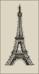
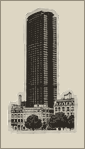
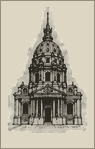
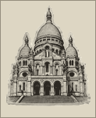
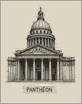
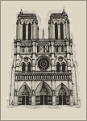
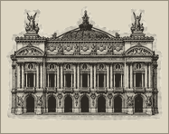
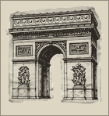

Planche du 09/08/2026. Vraies tuiles Carto dark_all, vraies vignettes, vraies tailles calculées. Aucun <script> : ce que tu vois est ce qui est.
1 · pourquoi « ça se perd » — les chiffres
La taille d'un monument suit sa hauteur réelle convertie au zoom, bornée entre 9 et 340 px. Voici ce que ça donne, en pixels, monument par monument. Le — veut dire : effacé.
zoom
z11
z12
z13
z14
z15
z16
z17
tour eiffel 330 m
—
13
26
52
105
210
340
montparnasse 210 m
—
—
17
33
67
134
267
invalides 107 m
—
—
—
17
34
68
136
sacré-cœur 83 m
—
—
—
13
26
53
106
panthéon 83 m
—
—
—
13
26
53
106
notre-dame 69 m
—
—
—
11
22
44
88
opéra 56 m
—
—
—
—
18
36
71
arc de triomphe 50 m
—
—
—
—
16
32
64
Le fond du carnet est vide là où on en a besoin.À z11 — Paris en entier, le moment où on cherche à s'orienter — aucun monument n'existe : la tour Eiffel elle-même ferait 6,6 px. À z12, il en reste un. Et à l'autre bout, à z17, la tour fait 340 px et Montparnasse 267 : deux images qui mangent l'écran au zoom où l'on ne cherche plus la ville mais un bar.
Le rapport d'échelle est intenable. Entre la tour Eiffel et l'Arc, la réalité impose 6,6 : 1. Une famille de signes cesse de se lire comme une famille au-delà d'environ 3 : 1 — au-dessus, ce ne sont plus huit repères, c'est un géant et sept miettes.
Et l'image n'a que 128 px de haut. Dès que la vignette dépasse cette taille — c'est-à-dire dès z16 pour la tour (210 px) et z16 pour Montparnasse (134 px) — le navigateur interpole. Une gravure fine agrandie 2,7 ×, c'est du flou. C'est la deuxième moitié du « pas fou ».
l'échelle réelle, sur les vraies tuiles
z11 · A — échelle réelle (l'actuel)
z12 · A — échelle réelle (l'actuel)
z13 · A — échelle réelle (l'actuel)
z15 · A — échelle réelle (l'actuel)
2 · l'état des découpes
Vu de près (agrandi ×2,3, pixels bruts), chaque gravure porte un liseré crème de 2 à 7 px — un contour de sticker, dentelé, qui suit les bosses. Il représente 5 à 12 % de la surface visible : sur la tour Eiffel, qui est fine, il l'épaissit d'un tiers. Deux fichiers portent en plus des miettes détachées de la planche source (tour Eiffel : 14 px flottants à droite ; Arc : 26 px en bas à gauche).
Bonne nouvelle : c'est réparable sans Procreate.Le nettoyage ci-dessus est automatique et déjà appliqué aux huit fichiers (design/monuments_essais/01_net/) : suppression des composantes détachées, retrait des pixels très clairs connectés au vide dans les 7 px du bord, puis re-durcissement de l'alpha. Rien n'a été redessiné.
3 · quatre traitements, du brut au tirage
La DA dit : papier charbon, encre ivoire, un seul rouge cire, rien qui brille — et « les photos des membres sont des tirages collés à bord blanc ». Les gravures brutes sont polychromes (du vert sur les toits de Garnier et du Sacré-Cœur) et sépia doré : c'est du chromo touristique, pas du carnet.
03 · tirage l'encré collé sur un carton droit, marge basse






et à la taille où on les voit vraiment
18 · 26 · 36 · 52 px de haut — la fourchette réelle sur la carte entre z13 et z15.
00 · brut
02 · encré
03 · tirage
Le tirage est le seul qui tienne à 18 px.Une gravure détourée à 18 px, c'est une tache — il n'y a plus de silhouette à lire. Un rectangle ivoire de 18 px, si : on lit « il y a un tirage ici » bien avant de lire quel monument, et on lit le monument dès 36 px. Le cadre donne au signe une forme constante que l'échelle ne détruit pas. Bénéfice de bord : le carton étant ivoire, il avale le liseré — le mauvais détourage cesse d'exister.
4 · trois partis pris d'échelle
Combien de repères sur les huit sont réellement visibles, à chaque zoom :
parti pris
z11
z12
z13
z14
z15
z16
z17
A · échelle réelle (actuel)
0/8
1/8
2/8
6/8
8/8
8/8
8/8
B · courbe tempérée + plancher
8/8
8/8
8/8
8/8
8/8
8/8
8/8
C · paliers par rang
2/8
5/8
8/8
8/8
8/8
8/8
8/8
z12 · A — échelle réelle
z12 · B — courbe tempérée (plancher 20)


z12 · C — paliers par rang
z14 · A — échelle réelle
z14 · B — courbe tempérée (plancher 20)
z14 · C — paliers par rang
L'échelle réelle était une bonne idée honnête et un mauvais outil.Elle est vraie en physique et fausse en usage : le croquis existe pour orienter, et il n'oriente à aucun zoom — trop vide en dessous de z14, écrasé par deux géants au-dessus de z16. B garde l'ordre du réel (la tour reste la plus grande) mais compresse le rapport de 6,6 : 1 à ~2,4 : 1. C ne garde que le rang — trois tailles, trois familles — et devient parfaitement prévisible.
5 · le croquis : collage ou trait ?
Le croquis est dessiné dans un espace 340 × 260 et rendu width:100%; max-height:240px — soit ~0,92 à 1,0 px par unité sur un téléphone. Les monuments y font 13 à 17 unités de haut, donc 12 à 17 px à l'écran. C'est en dessous de tout ce qu'on vient de mesurer.
l'actuel — le trait · 6 monuments, 13–17 px
collage brut · à l'échelle du croquis
collage tirage · à l'échelle du croquis
collage tirage · 28 px (le double)
6 · la hiérarchie du regard — les trois niveaux ensemble
L'ordre voulu : 1. les épingles et leurs noms · 2. les monuments · 3. les transports. Mesuré au contraste, sur tuile dark_all :
signe
contraste
combien à l'écran
à partir de
nom de spot ivoire sur plaque .78
15,2 : 1
8 max
z13
vignette monument
4,6 : 1
0 à 2 sous z13,5
—
nom de station RER op .38
3,2 : 1
24 max
z12,5
nom de station métro op .30
2,5 : 1
(idem)
z13
nom de station tram op .24
2,0 : 1
(idem)
z14
station tracée op .95
13,0 : 1
1
—
Le contraste par signe est déjà bon. Ce n'est pas lui, le problème.15,2 contre 2,5, c'est un rapport de six. Ce qui casse la hiérarchie, ce sont trois faits de structure : · le compte — 24 étiquettes de transport contre 8 noms de spots. Trois fois plus. L'œil compte les marques avant de mesurer leur contraste : vingt-quatre chuchotements couvrent huit voix. · le seuil — le RER parle dès z12,5, les spots se taisent jusqu'à z13. Entre les deux, la carte ne dit que des transports. En dessous de z13, elle ne dit rien d'autre non plus. · le trou du milieu — le niveau 2 est vide. Sans monuments, il ne reste que le niveau 1 et le niveau 3 face à face, et une échelle à deux barreaux se lit toujours comme « tout au même niveau ».
z14 · AVANT — 12 stations, 4 noms, monuments à l'échelle réelle
Mhôtel de ville
Msaint-paul
Mrambuteau
Mpont marie
Mchemin vert
Msully-morland
Mfilles du calvaire
RERchâtelet
Mcité
chez alain
la buvette
le mary celeste
candelaria
z14 · APRÈS — 7 stations, 8 noms, monuments en tirage/paliers
Mhôtel de ville
Msaint-paul
Mrambuteau
Mpont marie
Mchemin vert
Msully-morland
chez alain
la buvette
le mary celeste
candelaria
la perle
little red door
le petit fer
au bourguignon
z15 · AVANT — 12 stations, 4 noms, monuments à l'échelle réelle
Mhôtel de ville
Msaint-paul
chez alain
la buvette
la perle
le petit fer
z15 · APRÈS — 7 stations, 8 noms, monuments en tirage/paliers
Mhôtel de ville
Msaint-paul
chez alain
la buvette
la perle
le petit fer
au bourguignon
la caféothèque
Dans « après », on n'a presque rien enlevé au transport en opacité (.30 → .20, et le halo bleu retiré : sur fond nuit il ne servait qu'à re-durcir ce que l'opacité venait d'adoucir). Ce qui change la lecture, c'est le nombre : moitié moins d'étiquettes, deux fois plus de noms de lieux, et un niveau 2 enfin peuplé.
La station tracée ne bouge pas. À .95 elle est à 13 : 1 — elle répond à une question posée, elle sort du filigrane, et rien ici ne la touche.
7 · ce que je recommande
1 — Abandonner l'échelle réelle. Prendre C (paliers par rang).Trois tailles selon la hauteur du monument (haut / moyen / bas), quatre paliers de zoom. On garde l'idée juste — la tour Eiffel est plus grande que l'Arc — et on jette la conséquence absurde : un croquis d'orientation qui n'oriente pas. B est défendable si tu tiens au continu ; C est plus sûr, parce qu'un palier se règle à l'œil et ne surprend jamais.
2 — Le traitement : tirage encré (03).Encre charbon → ivoire, chroma nulle, collé sur un carton droit à marge basse. C'est littéralement la phrase de la DA (« des tirages collés à bord blanc »), c'est le seul traitement lisible à 18 px, et il rend le mauvais détourage sans objet. Ombre portée douce, jamais de lueur.
3 — Le croquis : non. Garder le trait.À 13–17 px, une gravure est une tache — la planche le montre. Et un rectangle ivoire à cette taille au milieu des bulles de quartier ne se lit pas comme un monument mais comme un post-it : il volerait le rôle des zones, qui sont ce qu'on tape. Le croquis est un schéma ; son échelle veut du trait. Si tu veux du collage là-bas, il faut doubler la taille (28 px) et n'en garder que trois — c'est le dernier panneau du §5, et je le trouve déjà encombré.
4 — La hiérarchie : monter les noms de spots avant de baisser le transport.Passer le plafond de noms de spots de 8 à 14–16 au zoom quartier, et descendre le plafond de stations de 24 à 12. Aligner les seuils : aucun transport ne doit parler avant les spots (RER z12,5 → z13). Côté encre, un seul geste : retirer le halo bleu du nom de station (inutile de nuit) et poser le nom de spot en 700. L'opacité, elle, a déjà été assez baissée — continuer rendrait la carte fade sans rien gagner.
planche fabriquée le 09/08/2026 · images traitées dans design/monuments_essais/ · rien n'a été poussé dans l'app